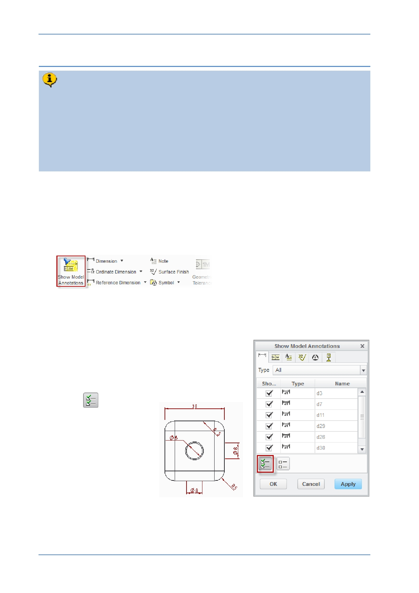

PTC Academic Program
Step 5: Adding dimensions
There are two ways to add dimensions to a drawing.
You can “ show ” the dimensions used to create features in the 3D model. These
have the advantage of being able to change the 3D model if they are altered in
the drawing.
“ Added ” or “ driven ” dimensions can be inserted into a drawing. These report the
size of the model and will update if the model changes but this type of dimension
cannot be used to control the 3D model.
1. Showing dimensions:
In the graphics area, select the view you want to add dimensions to. The border
of the sketch will turn green showing it is selected.
In the Annotations group in the Annotate tab, click on Show Model Annotations.
The Show Model Annotations dialog box will open listing all the dimensions that were
used to create the 3D model of the corner cube. The dimensions will also appear on
the selected view colored dark red.
The dimensions can be checked/ticked individually in
the dialog to make them appear on the drawing.
Selected dimensions turn blue to show they will appear
in the drawing. Near the bottom of the dialog box is a
button to add all the dimensions.
Click
to show all
dimensions on the
selected view.
Click OK to close the
dialog.
© 2012 PTC
Creo Parametric 2.0 Primer
Page 96